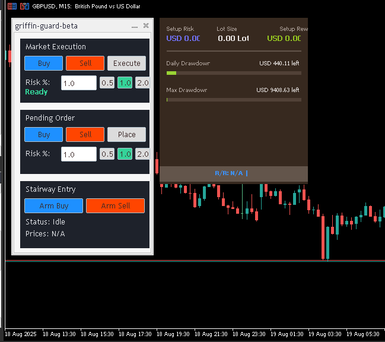
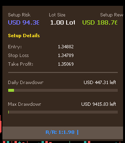

نصب و راهاندازی
۱. ابتدا فایلهای پروژه را از گیتهاب دانلود کنید.
۲. نرمافزار MetaTrader 5 را باز کرده و از منوی File گزینه Open Data Folder را انتخاب کنید.
۳. وارد پوشه `MQL5/Experts` شوید.
۴. یک پوشه جدید به نام `GriffinGuard` بسازید و تمام فایلهای `.mq5` و `.mqh` را در آن کپی کنید.
۵. به MetaTrader برگشته، در پنجره Navigator روی Experts راست کلیک کرده و Refresh را بزنید.
۶. اکسپرت Griffin Guard اکنون آماده است تا آن را روی چارت خود بکشید.
پنل اصلی معاملات
پنل اصلی مرکز فرمان شماست و از سه بخش مجزا تشکیل شده است.
بخش Market Execution
برای ورود سریع به معامله با قیمت فعلی بازار:
- دکمه Buy/Sell: با کلیک روی این دکمهها، خطوط حد ضرر (قرمز) و حد سود (سبز) روی چارت ظاهر میشوند.
- فیلد Risk: درصد ریسک مورد نظر خود را وارد کنید یا از دکمههای ریسک ثابت (مثلاً 0.5%, 1%, 2%) استفاده نمایید.
- لیبل وضعیت: این لیبل به شما بازخورد لحظهای میدهد (مثلاً "Ready" یا "Lot Size Too Small").
- دکمه Execute: پس از تنظیم خطوط و اطمینان از وضعیت "Ready"، با کلیک روی این دکمه معامله شما اجرا میشود.
بخش Pending Order
برای تنظیم سفارشات شرطی (Limit/Stop):
- دکمه Buy/Sell: با کلیک روی این دکمهها، خط ورود (سفید)، حد ضرر و حد سود روی چارت ظاهر میشوند.
- جابجایی خطوط: خط ورود را به قیمت مورد نظر خود بکشید. نوع سفارش (Limit یا Stop) به صورت خودکار بر اساس موقعیت خط نسبت به قیمت فعلی تعیین میشود.
- دکمه Place: پس از تنظیم تمام خطوط، با کلیک روی این دکمه سفارش شما ثبت میگردد.
استراتژی Stairway Entry
این یک استراتژی منحصربهفرد برای ورود به معامله در پولبک پس از شکست یک سطح کلیدی است:
- Arm Buy/Sell: با کلیک روی این دکمهها، دو خط روی چارت ظاهر میشود: خط شکست (نارنجی) و خط ورود به پولبک (سفید).
- تنظیم خطوط: خط شکست را روی سطح مقاومت/حمایت و خط ورود را در محلی که انتظار پولبک دارید، قرار دهید.
- عملکرد خودکار: پس از شکستهشدن خط نارنجی، اکسپرت به صورت خودکار یک سفارش لیمیت روی خط سفید قرار میدهد تا شما را در بهترین قیمت وارد معامله کند.
پنل نمایش اطلاعات
این پنل یک داشبورد کامل از وضعیت حساب و معاملهی در حال تنظیم شماست.
- بخش Setup: نمایش ریسک به دلار، حجم لات محاسبهشده و سود احتمالی.
- بخش Details: نمایش قیمت دقیق خطوط ورود، حد ضرر و حد سود.
- بخش Live: اگر معامله باز داشته باشید، سود/ضرر لحظهای، ریسک کل و نسبت R:R زنده را نمایش میدهد.
محافظ پراپ فرم
این بخش که در پنل اطلاعات نمایش داده میشود، مانند یک نگهبان از حساب شما محافظت میکند:
- Daily Drawdown: نوار پیشرفت ضرر روزانه شما را نشان میدهد. با نزدیک شدن به حد مجاز، رنگ آن به نارنجی و سپس قرمز تغییر میکند.
- Max Drawdown: نوار پیشرفت حداکثر ضرر کلی مجاز را نمایش میدهد.
- عملکرد: اگر معاملهای که میخواهید باز کنید، قوانین پراپ را نقض کند، گریفین گارد به صورت خودکار جلوی آن را میگیرد.
تنظیمات ورودی (Inputs)
شما میتوانید تمام جنبههای گریفین گارد را از طریق پنجره تنظیمات ورودی شخصیسازی کنید. مهمترین تنظیمات عبارتند از:
| پارامتر | توضیح |
|---|---|
| InpRiskPreset1/2/3 | مقادیر درصدی برای سه دکمه ریسک ثابت را مشخص میکند. |
| InpTPMode | حالت حد سود را تعیین میکند: دستی (Manual) یا بر اساس نسبت ریسک به ریوارد (RR_RATIO). |
| InpTP_RR_Value | اگر حالت R:R فعال باشد، مقدار آن را مشخص میکند (مثلاً 2.0 برای 1:2). |
| InpEnablePropRules | محافظ پراپ فرم را فعال یا غیرفعال میکند. |
| InpMaxDailyDrawdownPercent | حداکثر ضرر مجاز روزانه به درصد. |
| InpMaxOverallDrawdownPercent | حداکثر ضرر مجاز کلی به درصد. |